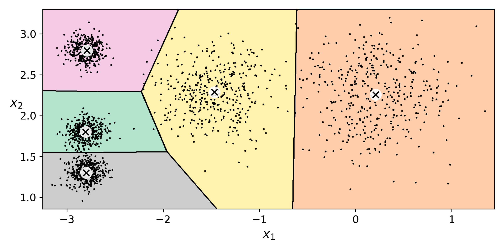

K-Means is known as an unsupervised machine learning algorithm. K-Means aim is to cluster data points together based on their values within the decision boundaries.
Unsupervised Learning
Unsupervised machine learning is the term used when the dataset provided has no labels. The aim of the unsupervised models is then to gain insights, from the data, without a teacher.
There are many different types of unsupervised learning algorithms which can get split into four main categories.
These are:

The image shows an overview of the different Machine Learning tasks for the different types of problems.
What is the Purpose of Clustering?
The purpose of clustering is to allow the ability to make sense of large datasets possible, by extracting values from large sets of either structured or unstructured data. Like in life, when you are trying to complete a big task, it is always better to slip the tasks up into similar groups. Well, this is what clustering is doing with your data, sorting it out. Grouping similar data attributes, to create some logical groupings, which will then aim to allow the user to attempt then to analyse it.
Clustering allows you to take a sweeping glance at your dataset. By doing this, this will then allow you to form some insights/logical structures based on what you have found in the data. Therefore, allowing you to have a good idea of what you will find within the data, before going deeper into it and exploring more of it through further analysis.
In a nutshell, clusters are sets of data points that share similar attributes. While clustering algorithms are tools to help group these data points, into clusters, based their similarities.
You might have heard of classification and thought that classification is the same thing as clustering. Many people do, but this is not the case. In classification, before you start, you already know the number of classes into which your data should get grouped. Also, you already know what class you want each data point to be assigned. In classification, the data in the dataset is getting learned from is also labelled. When we use clustering algorithms, on the other hand, we have no predefined concept for how many clusters are appropriate for your data. Sometimes you need to guess the number, and sometimes you rely upon the clustering algorithms to sort and cluster the data in the most appropriate way. With clustering techniques, you’re learning from unlabeled data.
There are different clustering methods, depending on how you want your dataset to get divided. The two main types of clustering algorithms are:
Types of Clustering Algorithms
Since the task of clustering is subjective, the means available for achieving this goal are plenty. Every methodology follows a different set of rules for defining the ‘similarity’ among data points. There are more than 100 clustering algorithms known.
But few of the algorithms are used popularly, let’s look at them in detail:
In-depth Look into K-Means
What is K-Means?
K-Means is one of the hard partitioning clustering algorithms. The centre of the cluster represents each cluster of data, and each data point gets assigned to the nearest cluster centre, also known as the centroid. However, the number of clusters is a pre-set value. This pre-set value is known as the number of K. K-Means is an iterative process which starts with random initialisation of the centroids and updates on each iteration.
Determining a good cluster, by K-Means Standards
K-Means looks for a couple of key things for deciding what makes a good cluster.
These are:
-
With each data point to minimise the Sum of Squared Error (SSE) from the data to their corresponding centroid.

denotes the
cluster.
represents the centroid to the cluster
represents the distance between the data point x and its centroid.
- Therefore the stopping criteria for the number of iterations K-Means goes through is either very small changes in the SSE, showing there is convergence within the data, or if a fixed number of iterations has been reached.
The Stages of K-Means

K-Means is an iterative clustering algorithm that aims to find local maxima in each iteration. This algorithm works in these 5 steps:
- First, a specified desired number of clusters K. From the above image, we can see that there are five different clusters.
- The algorithm randomly assigns the centroids for each cluster.
- Each data point gets assigned to the closest centroid to the data point.
- Once all data points have been assigned to the corresponding centroid, the centroids are updated.
- Steps 3 and 4 are repeated until no improvements are possible: Similarly, we’ll repeat the 3rd and 4th steps until we’ll reach global optima. When there will be no further switching of data points between the clusters. It will mark the termination of the algorithm if not explicitly mentioned. 
K-Means in Action
Clustering algorithms get used for disease classification in medical science. However, you will also see clustering get used for customer classification in marketing research and environmental health risk assessment in environmental engineering.
To better illustrate the nature of classification, though, take a look at Twitter and its hashtagging system. Say you just got hold of your favourite drink in the entire world: an iced caramel latte from Starbucks. You’re so happy to have your drink that you decide to tweet about it with a photo and the phrase “This is the best latte EVER! #StarbucksRocks.” You include “#StarbucksRocks” in your tweet so that the tweet goes into the #StarbucksRocks stream and is classified together with all the other tweets that get labelled as #StarbucksRocks. Your use of the hashtag label in your tweet told Twitter how to classify your data into a recognisable and accessible group, or cluster.
Clustering has a large number of applications spread across various domains. Some of the most popular uses of clustering are:
- Recommendation engines
- Market segmentation
- Social network analysis
- Search result grouping
- Medical imaging
- Image segmentation
- Anomaly detection
Link to Additional Documents